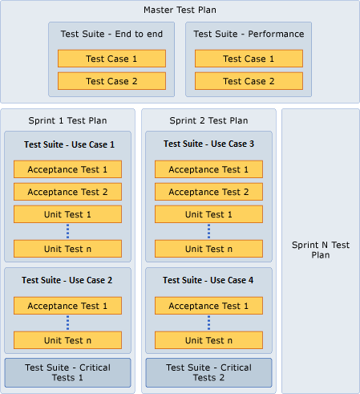

Catching defects as early as possible is the least expensive way to ensure software quality. Kent Beck and Cynthia Andres wrote “Here is the dilemma in software development: defects are expensive, but eliminating defects is also expensive. However, most defects end up costing more than it would have cost to prevent them.” (For more information, see the following Web page: Extreme Programming Explained: Embrace Change.) Best practices and tools can help your team to minimize the cost of preventing and fixing defects by maintaining the quality of your project throughout its lifecycle.
Your team can more accurately gauge the quality of your project at any time if you find defects, fix defects, and verify fixes as you go along. By testing often, your team and stakeholders can remain aware of the current state of the code and make informed decisions throughout the project. Ultimately, you should be able to answer the question “Can we release?” and understand the implications for the people who use the software.
This topic recommends the following practices:
-
Create a set of automated unit tests for each class and for the API of every major component. Writing unit tests should take about 40% of team members' time. For more information, see Creating Automated Tests.
-
Create tests for each use case. These should preferably be automated. For more information, see Use Case (GovDev).
-
Create check-in policies that remind team members to run unit tests before checking in code. For more information, see Add Check-In Policies.
-
Set up a continuous or nightly build that runs the full set of tests.
-
Monitor test coverage to ensure that all your code is tested. Aim for coverage of at least 70%. For more information, see Testing Gaps Excel Report (GovDev).
-
Run manual tests near the end of every sprint.
Your team can manage and scale these testing activities early in your project by using the integration between Microsoft Test Manager, Visual Studio Application Lifecycle Management (ALM), and Visual Studio Team Foundation Server. For more information, see Testing the Application.
 In
this topic
In
this topic
Test
Strategy
Your team’s success with testing depends on several factors, which include the size of your team, your team’s methods, and your team's management tools. You can use agile methods to continuously improve test results. By applying this method, not only can you start to test with very limited resources, but also you can adjust your practice as appropriate throughout your project.
What to consider when introducing agile testing
When introducing agile testing to an existing application, your team can start by thinking of your testing strategy at both the sprint level and the project level. At the sprint level, you can include a set of acceptance tests to cover each use case of the current sprint. At the project level, you can have tests that span the entire project, such as end-to-end testing. This is useful if you want to verify functionality that spans two or more sprints. You can create all kinds of tests while your team builds code during a sprint. These tests include unit tests, acceptance tests, and nonfunctional tests, such as performance tests, security tests, and usability tests.
To apply agile testing methods, you first should consider the history of your application and the system that your team uses. You can apply agile testing methods to both new and existing applications. You can use Microsoft Test Manager to create a test plan for your entire project and a test plan for each sprint in your project. These test plans allow your team to organize test cases into test suites that help prioritize running tests and help understand test results. For more information, see Creating a Test Plan Using Requirements or Use Cases. Your team can use Visual Studio ALM to group test cases into test suites through several methods:
-
Creating and managing a static group of test cases.
-
Using a query to create and manage a dynamic group of test cases (that is, find test cases based on priority).
-
Adding a use case to a test plan, where test cases have a link to the use case.
-
Copying an existing test suite from another test plan.
For more information, see Organizing Test Cases Using Test Suites.
Second, you must consider the testability of your code. To learn this, you need to understand the architecture and patterns of your application. If you use patterns such as Model View Controller (MVC), Model View ViewModel (MVVM), or Model View Presenter (MVP), you can isolate certain functions and run functional tests without the negative impact of user interface testing. However, this does not always represent the real case. For example, you cannot isolate functionality for the refactoring parts of your application, and you can reach certain areas of code only through the user interface or networking event handlers. If you want to significantly improve test quality, you must increase the percentage of testable code. For more information about these patterns, see ASP.NET MVC 3.
Third, you must consider the capabilities of your team before you implement agile testing. Some team members should be able to create unit tests when you implement functionalities. Some team members should be able to create and define manual use cases and workflow tests if they are familiar with the business rules of your application. Additionally, other team members should be able to create automated and more detailed tests that are based on these manual tests if they have necessary technical skills.
How to manage the testing lifecycle
Testing is an iterative process throughout your project. Refer to the following steps:
-
Make clear testing objectives, and make sure that your entire team agrees to them. Based on these objectives, determine your test strategy. For example, your strategy might be "Tests will be run before every check-in, unit tests will have 70% code coverage, and every use case will have at least one automated test."
-
Define your test plan based on project use cases, design assumptions, and nonfunctional requirements in the current sprint.
-
You can add use cases to the backlog and plan them for future sprints. You should match each test plan to at least one sprint and, therefore, should have test cases for all use cases in the sprint.
-
-
Define and build test cases, such as acceptance tests, unit tests, functional tests, and performance tests.
-
Group test cases into test suites. You can fit these test suites into defined test plans that help guide your testing effort.
-
Run test suites and contained test cases repeatedly throughout a sprint. Start to run tests early in a sprint, and continue to add test cases to the test suites. If you want to identify important test conditions and situations, you can apply exploratory testing and have frequent conversations inside your team.
-
Ensure that all the acceptance tests for a use case have passed before you set its status to complete.
Although the workflow can be much more involved depending on the breakdown of software, the previous illustration captures the essence of a workflow among main components.
-
Code generates builds.
-
Code is influenced by the defined work, test plans, and the quality of builds.
-
Test plans, test suites, and test cases are influenced by planned goals and other aspects of the project that this illustration does not show.
-
Changes in code can affect test cases.
Fixing Bugs
-
You must deal with bugs as early as possible. A severe bug means that the use cases that it affects have not been completed.
-
Create bug work items for bugs that are found through either testing or other activities. Set the severity of the bug to indicate the degree to which it affects use cases. A high severity, such as 0 or 1, indicates that important use cases are not implemented or that users must perform significant workarounds to achieve the use case. A low severity, such as 3, indicates that users can still achieve their main objectives without extra work.
-
Work with others on your team to decide on an action plan for each bug.
-
Resolve bugs as soon as you fix them. The bug should be assigned to another person to verify. Verify and close bugs as soon as possible.
-
Track the status of bugs. In the retrospective meeting at the end of each iteration, look at the Bug Trends report, and discuss the reasons for any unusual increases. For more information, see Bug Trends Report.
Test
Planning
Test planning is the process of helping your team to understand your project’s big picture and the process of preparing your team for all kinds of testing. Agile testing starts at the sprint level. In each sprint, your team creates tests to verify the use cases that were built in that sprint. The team runs the tests that were created in both the current and previous sprints. Through the course of the project, a large number of tests are built up that covers all functionalities. The following illustration shows a template for test plans in your project.
Create a test plan for each sprint and for the project
By using the testing features of Visual Studio ALM, your team can incrementally plan, organize, execute, and report tests. Your team can create a template for test plans, and team members can fill in test suites. In a test plan, your team can identify where you should use automated or manual test cases.
For each sprint in your project, you can start to create a test plan. By using this plan, your team can focus on verifying functionality in the current sprint. Although the plan is empty at first, you can use it as a placeholder for test suites. Then you can organize test cases into appropriate test suites. You should create these test cases early and throughout a sprint if you want to get timely feedback from project stakeholders.
You can also create a test plan that covers your entire project. You can use project test plans to coalesce tests from previous sprints and organize test suites that apply to the entire project. You should continue to run regression test suites because it is important to maintain stability and flow when your team builds larger projects. Especially if you work with larger and distributed teams that lack proximity, regression test suites can catch errors that are based on changes that have cascading impacts. Without correct measures in place, these errors are very difficult to catch and may be caught either late in the cycle or after delivery.
Some teams may want to define a test plan that spans the entire project. These kinds of test plans may verify related functionality in a number of sprints and contain test suites that run throughout the project. For example, you can test a feature that spans use cases across sprints only when the entire feature is complete.
Define acceptance tests before a sprint
You should define acceptance tests before a sprint. These acceptance tests can help you determine whether a use case is complete. You can track acceptance test cases if you create a test suite that is named Acceptance Tests in a test plan for each sprint. For more information, see Acceptance Testing later in this topic.
Build unit tests during a sprint
Your team should build unit tests during a sprint. Unit tests can verify code performance, such as the cost of time and resources that are used to execute code. Other types of tests, such as nonfunctional tests (that is, performance tests and security tests) should be built and added to the appropriate test suites. You should organize these test suites so that you can easily identify their cost.
Focus testing on areas of high use
Understanding where the high variability in your software exists determines where the hotspots can be. The user input, the environment that runs the software, the network, and the hardware are examples of configuration variables that enable your team to discover hotspots in the software. If a condition rarely occurs or there are a convoluted number of conditions that can occur during a test, the value of the test diminishes except that the potential impact of a defect is very high. In general, isolation of functionality is desirable when possible. Testing situations of high impact are also important. For more information about how to manage configurations by using Microsoft Test Manager, see Defining Your Test Matrix Using Test Configurations.
For existing projects, monitor the areas that have the highest number of defects, and determine why the defects exist. Also monitor code churn because this area might overlook underlying assumptions. Some reasons for code defects include difficulty of managing not only states (for example, network and user interface) but also code.
Separate tests for processing and storing data
Code that uses a database typically separates processing data from storing data. You can test data processing by running unit tests, and you can test data storage directly at the database layer. Visual Studio Test Professional 2010 provides functionality for testing database stored procedures. You should organize these tests into their own test suite. For more information, see Creating and Defining Database Unit Tests.
Microsoft Test Manager can be used to create snapshots of machine images and use them as a way to revert to a known state after running tests that depend on data (or some other aspect of the state). These tests are very valuable and have been traditionally very time intensive.
Acceptance
Testing
Acceptance tests verify use cases. These tests can not only ensure that you successfully build what your customers need throughout the lifecycle of your project but also build trust with your customers and show your accepted responsibilities. For more information, see the following Web page: Acceptance Test Engineering Guide.
How to get started with acceptance testing
Open Microsoft Test Manager, and then create a test suite that is named Acceptance Tests in your test plan. Your team should have at least one test suite that groups acceptance tests for each sprint. For more information, see Defining Your Testing Effort Using Test Plans.
Migrate from manual tests to automated tests
Manual tests are easier to define than automated tests but more expensive to run. It is, therefore, a good strategy to start with manual tests and gradually replace the more important ones with automated tests.
First, start to build a set of manual test cases that verify each use case that has been defined for the sprint. Because there is no code at the start of a sprint, a test case should outline high-level actions that map to parts of a use case. For example, a step in a test case can be “As an authenticated user, do…” Starting with a manual test case enables your team to quickly define ideal acceptance tests before a sprint starts.
Second, revise and update acceptance tests to reflect specific user experiences when your team has code that implements use cases in a sprint. However, if your team does not want to modify the existing set of acceptance tests, you can import the tests into a new test suite and have a starting point for more detailed tests. For example, a step in a more detailed test case can be “Type name into the Username text box, and click the Login button to log into the bank account.”
Third, based on your acceptance tests, create coded user interface (UI) tests by using action recording. For more information, see How to: Generate a Coded UI Test from an Action Recording. Coded UI tests can generate cleaner code if you create steps that isolate functionality. You can run automated tests from your test plan if you attach coded UI test to manual test cases (For more information, see How to: Associate an Automated Test with a Test Case.)
The manual tests that were defined at the beginning of a sprint can help you create automated tests. There is a cost to both manual and automated tests because manual tests need to be run by a person and automated tests need to be updated if the code or user experience changes. For more information, see Manual vs Automated Testing later in this topic.
Who runs the acceptance test cases?
Your team, your product owner, and your customers can run acceptance test cases. Your team should run them as often as possible to provide a baseline on the set of tests that need to pass in a sprint. The product owner and the customer can also run the acceptance tests and may require verification to successfully complete the sprint.
Your team can use Microsoft Test Manager to run each acceptance test case and record a video screen capture of the test results. In this way, you can get a visual record of the test results and can also share the results with your customers. This is helpful when it is difficult to create required configurations (for example, multi-server configurations).
Define acceptance test cases along with use cases
You can define acceptance criteria right after you define use cases. By defining acceptance tests, you can help your team understand the acceptance criteria for the current sprint from the product owner and customers. Because the customer needs to agree to the acceptance tests, it is a good idea to create the acceptance test cases before the sprint starts.
Unit
Testing
Unit tests are automated tests that verify functionality at the component, class, method, or property level. Unit tests are the foundation of automated and regression testing, which provides long-term stability and future maintainability of the project.
How do unit tests help evolve the design of my application?
The process of creating unit tests while building the tested code helps define the shape of the code. You can create code that is testable by using unit tests. Difficulty in creating unit tests for code is a sign that the code should be refactored.
How do I organize my unit tests?
Each team member who writes code should create unit tests for the components that they build and check the unit test code into version control inside a Visual Studio project. File the test case work items into a build verification test suite that will be run during each build through continuous integration and also inside the test suite that verifies the corresponding use case.
How do I manage variance of unit tests without having to change the test code?
Variance in test inputs defines the similarity or differences between tests as it verifies functionality in the project code. For example, when testing the logon component of a Web application, you can provide several types of passwords to create a user account. The system may have rules for the order and combination of character types that are used.
Visual Studio Test Professional 2010 provides capabilities for writing data-driven unit tests and coded UI tests. For more information, see How to: Create a Data-Driven Unit Test and How to: Create a Data-Driven Coded UI Test.
Test-Driven
Development and Testing Early
Test-driven development (TDD) is a discipline of design and programming where every line of code is written in response to a test that the programmer writes just before coding. The idea of becoming the consumer of the code which you want to implement is very powerful and maintains a realistic expectation of how the code should be used and designed.
In TDD, the developer works in many small increments. The development of each small increment takes between a few minutes and a few hours. Typically, many such increments make up a use case. The developer check in the tests and code when the use case works. The developer works in the following cycle:
-
Write an automated test that is expected to pass when the increment is written.
-
Verify that the new test fails to help make sure that the test works.
-
Write code that will make the test pass.
-
Run the test to verify that it succeeds.
-
Also run all other tests in the same area to make sure that no bugs have been introduced.
-
Refactor the code, if necessary, to improve its structure without adding behavior. Rerun the tests to make sure that the code still works.
-
Repeat all these steps until a complete use case is implemented. As the preceding increments are integrated into a complete use case, add tests that verify the full use case.
-
Check in the implementation code and unit tests.
If you are interested in the benefits of test-early methods, you can start by creating manual (or manual acceptance) tests. These manual tests can be automated by creating a coded UI test. (For more information, see How to: Generate a Coded UI Test by Recording the Application Under Test .) Integration tests that use the unit test framework in Visual Studio ALM can also be created to verify functionality that is being implemented. The groups of test cases that are created early in the iteration are run early in the iteration to try to both verify functionality and find bugs. These test suites and test cases can be continuously run as regression tests throughout the life of the project. By continuing to run these tests, you help ensure that the bugs that were found and the functionality that was verified early in the iteration are not affected by change later in the project.
Use unit tests for continuous integration
The unit tests that are created while using the test-early practice should be organized inside the test suite for the current sprint and use case. These unit tests can be promoted to the project-wide test plan and run periodically by the team and inside the continuous integration cycle. Unit tests can also serve as a foundation for integration, load, and performance testing.
Unit tests that are created at the start can be used as part of continuous integration. For more information about how to run tests during a build, see TestToolsTask Task.
Use virtualization to manage test configurations
To run unit tests, you can create a set of environments that are managed Hyper-V images in Microsoft Test Manager. For more information about how to run automated tests from a test plan by using Microsoft Test Manager, see TestToolsTask Task.
Manual
versus Automated Testing
Automated and manual test cases are complementary. Agile teams strive to have more automated test cases because they promote frequent or continuous test runs. To continuously run tests, they must execute quickly and frequently, which is difficult to achieve with manual testing.
There are several considerations that should be made when deciding on a distribution of manual and automated test cases.
How do the skills in your organization influence your distribution of test types?
The product owner helps define the use cases for the project and should also contribute to the creation of acceptance tests. The product owner will likely not be producing coded tests but will have significant knowledge of the business domain. The test cases that are defined by the product owner will, therefore, be at the level of the business vocabulary and business rules. For example, a product owner in a shipping company will specify different means of transportation that are supported by the business (for example, truck, train, air, sea, or a combination). The product owner can then define several test cases that exercise the different possibilities. For these manual tests, it is important to specify the minimum number of tests that exercise the different options (in this case, the means of shipping).
Team members who produce code can build coded UI tests, which can be based on the
manual tests or independent of any other test. (For more information, see
When should you convert manual tests into automated tests or create automated tests from the start?
You can build automated tests when you expect to run tests repeatedly to maintain stability of your code. It is important to consider the effort of creating automated tests because the investment of automation affects the resources of your team. Creating automated tests when the code has little churn results in a higher return on investment (ROI) because there is less test churn. However, there is value in creating automation early because it will help discover problems in both the logic and design. In both cases, the resources that are required for supporting the automated test code needs to be considered.
After you decide that a set of tests must be automated, move to complete the automation as quickly as possible because the benefits of automation include managing the stability of the code. The stability and number of defects that are found as the automation is written will affect the effort that is required to complete the automation. Ultimately, the balance between manual versus automated tests is about the prioritization of the kinds of tests that need to be built and run during the life of the project.
What types of tests are automated?
Unit Tests
Unit tests verify functionality in code or through a process such as TDD. Unit tests are important because they help maintain the stability and dependencies inside the code. TDD also tends to produce better design with dependencies and good layer definition because it helps you understand the design from the code consumer’s perspective.
Load Tests
You can create load tests that are based on existing automated test cases, or you can create tests that generate specific types of loads on applications or services. For more information about how to use test agent controllers and test agents to generate simulated testing loads, see How to: Run a Test Using Test Controllers and Test Agents.
For more information about load testing with Visual Studio ALM, see the following page on the Microsoft Web site: Understanding Load Tests.
Continuous Integration Tests
You can use continuous integration with Visual Studio ALM to help ensure that whenever code is developed and checked in, it works correctly with the existing code. Continuous integration is critical as your team and your code base grows. You can define a build type that includes testing parameters and specify which tests to run after completing the build. For more information about how to define a build that runs tests, see Define a Build Using the Default Template.
What types of tests can be automated?
Configuration Testing
Testing on multiple installed environments can be a very laborious task. Microsoft Test Manager provides capabilities of running test suites on different configurations by using virtual machines or physical machines. For more information about how to run tests and gather data in multiple environments, see Setting Up Test Machines to Run Tests or Collect Data.
User Interface Tests
Visual Studio ALM has capabilities of creating automated tests directly for the user interface. For more information about how to create coded user interface tests, see How to: Create a Coded UI Test.
Installation Tests
You can use the lab capabilities of Microsoft Test Manager to set up a group of configurations that you can use to verify whether the installation programs for your applications work as expected.
What are the barriers to automation?
Capabilities of the team
Creating automation requires a subset of the test team to learn how to write code. Plan to incur the learning curve of creating automation and the design of the test code. Similar to production code, design the automation code for your desired goals, such as maintainability, ease of composition, and longevity.
For more information about how to create automated tests by using Visual Studio Test Professional 2010, see Creating Automated Tests.
Code churn
Code that is changing frequently is a moving target and will have cascading effects into test automation code because it will also need to be changed. Avoid these cascading effects by creating test automation code for components and interfaces that are less likely to change.
Code design
Code frameworks such as ASP.NET MVC and MVVM guide team members to write code that has the isolation that is required to verify different parts of the code. Code that is tightly bound to the user interface is difficult to test because it may require the user to interact with the user interface controls.
What are the benefits of manual test cases?
Manual test cases offer the following benefits:
-
Manual tests help your team find bugs through the process of exploration.
-
Manual test cases are easy to define because you can define the set of steps at any abstraction and define success and failure in any terms that you like.
-
It is very easy to get started writing manual test cases early in the project before any code has been written. This is important during the process of defining acceptance tests.
-
If you use Visual Studio Test Professional 2010, test cases can be composed of shared steps, which help save time when defining similar tests and allow your team to reuse a single version of a subset of the test. Using shared steps also helps when changing test cases because a change to the shared steps automatically changes all the test cases that use the shared steps. For more information about how to create and use shared steps, see
-
Manual test cases can serve as a means of early communication in the project or sprint.
-
Manual test cases can serve as a means of documenting an automated test case without anyone reviewing the code.
-
If you use Visual Studio ALM, running manual tests can gather code coverage metrics.
What are the deficits of manual test cases?
Manual test cases carry the following deficits:
-
Defining success criteria can be complicated because it depends on the perspective and the language that is used in the definition of the test. Some language can be interpreted differently, and that may leave room for error.
-
Running test suites that include manual test cases requires a person to physically follow the test steps and report results. This process can consume of a lot of time and, therefore, may require either an increased number of team members to execute tests or an increased period of time for running the test suite. By using Visual Studio Test Professional 2010, the team can use "fast forward manual testing," in which actions are recorded during testing, which can then be run in future test runs.
-
Depending on the stability of the code, the time and effort that is required to run the tests will vary. As a result, running manual tests can affect flow in the team.
-
The biggest deficit is that manual tests are prone to human error in detecting a bug. Testers may see the bug in front of their eyes and not recognize it.
What are the benefits of automated test cases?
Automated test cases offer the following benefits:
-
Automated tests help maintain stability and help find regressions that might occur because of code changes.
-
Automated tests can be run unattended.
-
Automated tests are software and can be designed and composed of other reusable code. This makes automated tests flexible and maintainable.
-
Automation can be run on multiple configurations by using Microsoft Test Manager.
-
Code coverage metrics can be gathered when automated tests are run.
What are the deficits of automated test cases?
Automated test cases carry the following deficits:
-
Special conditions need to be considered and implemented using code. As the automation is created and run, additional conditions will be implemented as they are discovered.
-
When code is changed or refactored, there may be cascading effects that will require a corresponding effort to change the affected automated tests.
-
There may be psychological impact on your team when code changes cause many tests to fail. If these tests are used as flags, the team may not want to raise any flags.
-
There may be a false sense of security when all tests pass if the test cases are not testing for the correct conditions. It is important to maintain the test suites and ensure that they verify the correct conditions and results.
Reporting the Test Results
From an agile perspective, reporting and querying Team Foundation Server for the current state of quality, based on bugs or aggregate metrics, is the part of the feedback loop that allows the team to iterate and make changes to the code, the project plan, and the test plan. For more information, see Test Plan Progress Report.
What levels of testing should be reported to your team?
By using Visual Studio Test Professional 2010 and Team Foundation Server, your team can understand the status of planning and executing tests. Team Foundation Server stores your test plans, test suites, test cases, test results, and all other associated data that is generated throughout your testing process. You can visualize the process of testing and quality control if you combine Microsoft Test Manager with reporting and work item queries in Team Foundation Server. You can use Microsoft Test Manager to query for bugs in a variety of different states. Bugs that are marked as fixed by other team members should be in the resolved state. You can use subsequent builds to verify the fixed bugs. For information about how to verify whether a bug has been fixed, see How to: Verify a Bug is Fixed Using Microsoft Test Manager.